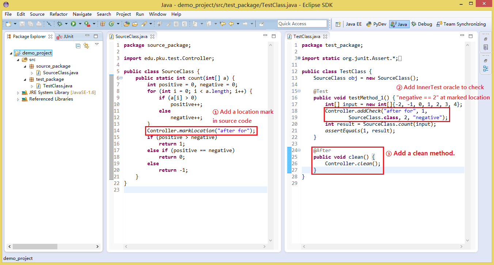
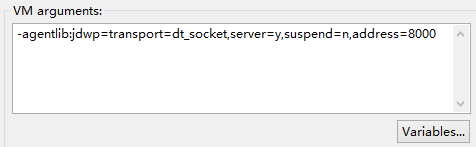
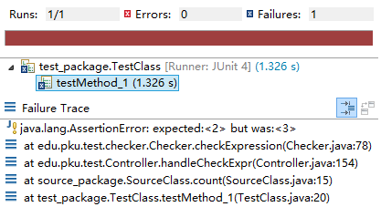

InnerTest is a tool that supporting input-specific assertion on internal states.
An important factor of the fault-detection capability of a test suite is how well the test oracles catch a triggered fault. Traditional test oracles are defined on the outputs of test executions. Recently, researchers have shown theoretically that test oracles defined on the internal states of execution could improve the fault-detection capability. However, in practice, we can only write assertions that are common to all test inputs, and there is no supporting mechanism for the testers to write input-specific assertions on internal states.
A demonstration video will be accessed at: http://youtu.be/23d8yPCwpKs
| Zhao Kai | Undergraduate Student at Peking University |
| Muyao Zhu | Master Student at Peking University |
| Tao Zhu | Master Student at Peking University |
| Yingfei Xiong | Assistant Professor at Peking University |
| Dan Hao | Associate Professor at Peking University |
| Lu Zhang | Professor at Peking University |
Figure 1: Sample Source Code & Test Code
We take source code and test code in Figure 1&2 for example. The code calculates whether the number of positives is bigger than negatives or not. But there is a bug in the source code. The element "0" will be treated as negative.
But test with input int[] input = new int[]{-2, -1, 0, 1, 2, 3, 4} cannot find the error, the return value still be 1. (The number of negatives was calculated as 3, which should be 2. But the number of positives of 4, 4 is bigger than 3 and 2.)
Then we use InnerTest to write input-specific assertion on internal state to find this error. First we should import our library into your build path. Besides our tool, you need also make sure that tools.jar from your Java SDK should be imported into your build path.
We provide several kinds of interfaces for testers to locate the code to be checked, here we use the one that first add a marker inside the code to locate where to check: Controller.addCheck(String locationKey, int times, Object input, Object expectedValue, String expression) It has 5 parameters.
The first one is the marker identifier, which we defined in source ocde, to locate the code where we want to check or test
The second parameter is execution times, it defines at which time executing here, we check the expression and value. The reason that we import this parameter into interface is that, a statement may be executed several times in one test, and specifying only the location does not distinguish different executions.
The third one is class object, to specifies the Java file that we should instrument. We use the class name to locate a file name because the source file name is not available in Java byte code.
The last two are theexpression to be checked and the expected value, in this example, theyshould be integer value 2 and variable negative, means checking whether negative == 2 or not. Last but not lease, you should invoke a clean method Controller.clean(). To ensure that the assertion is only effective during the execution of the test. This clean up is necessary because there may be dependencies between tests. When there are dependencies, we cannot start a new process for each test execution, but has to execute one test after another in one process. See Fig 3 belo.
Figure 3: Write Internal oracle
Before you run your InnerTest test, you should configure the JVM arguments in Run Configuration. Right click the test code, Go to Run As -> Run Configurations -> Arguments -> VM arguments, add one line arguments "-agentlib:jdwp=transport=dt_socket,server=y,suspend=n,address=8000", this means you allow jdb to modify your class file
Figure 4: Run Configuration
After that, you can run you InnerTest test now. Fig 5 below shows the result of the InnerTest, the result says that the variable negative should be "2", but actually it's "3".
Figure 5: Test Result
Please contact "ayzk@pku.edu.cn" if you had any questions about InnerTest